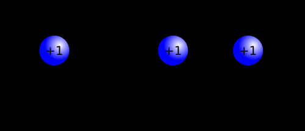
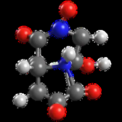
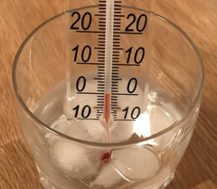

Melting point
| Vietnamese | ( ) Nhiệt độ nóng chảy |
|---|---|
| English | Melting point |
| Pronunciation | /ˈmɛltɪŋ pɔɪnt/ |
| Word type | noun (as labelled in the PDFs) |
Topic 1 — Meaning (Vietnamese)
Nhiệt độ nóng chảy là nhiệt độ mà khi đạt tới ngưỡng đó thì quá trình nóng chảy của một chất xảy ra, tức là chất đó chuyển trạng thái từ rắn sang lỏng
Meaning (English)
The melting point of a substance is the temperature at which it changes state from solid to liquid. (Nhiệt độ nóng chảy là nhiệt độ mà khi đạt tới ngưỡng đó thì quá trình nóng chảy của một chất xảy ra, tức là chất đó chuyển trạng thái từ rắn sang lỏng).
Example
The metal with the highest melting point is tungsten, at 3,414 °C (6,177 °F; 3,687 K); this property makes tungsten excellent for use as electrical filaments in incandescent lamps. (Kim loại có điểm nóng chảy cao nhất là vonfram, ở mức 3.414 °C (6.177 °F; 3.687 K); đặc tính này giúp vonfram trở nên tuyệt vời để làm dây tóc điện trong bóng đèn sợi đốt).
Topic 4 — Meaning (Vietnamese)
Nhiệt độ nóng chảy là nhiệt độ mà khi đạt tới ngưỡng đó thì quá trình nóng chảy của một chất xảy ra, tức là chất đó chuyển trạng thái từ rắn sang lỏng
Meaning (English)
The melting point of a substance is the temperature at which it changes state from solid to liquid (Nhiệt độ nóng chảy là nhiệt độ mà khi đạt tới ngưỡng đó thì quá trình nóng chảy của một chất xảy ra, tức là chất đó chuyển trạng thái từ rắn sang lỏng).
Example
The metal with the highest melting point is tungsten, at 3,414 °C (6,177 °F; 3,687 K); this property makes tungsten excellent for use as electrical filaments in incandescent lamps (Kim loại có điểm nóng chảy cao nhất là vonfram, ở mức 3.414 °C (6.177 °F; 3.687 K); đặc tính này giúp vonfram trở nên tuyệt vời để làm dây tóc điện trong bóng đèn sợi đốt).
Images from the PDFs




